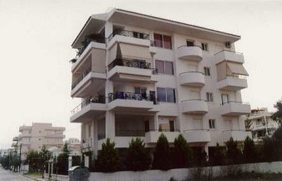
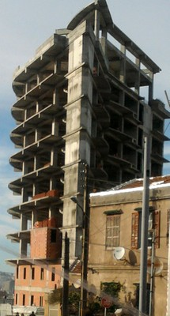
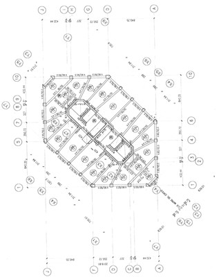
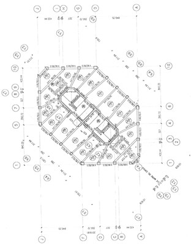

Sistema dual pórtico-muro [LDUAL]
La estructura resistente a cargas laterales comprente Pórticos de momento y muros a cortante actuando juntos en la misma dirección y es más aplicable a edificios de hormigón armado. Debido a la esbeltez de los muros, el sistema estructural no puede ser clasificado como un sistema de muro system; Sin embargo los muros a corte interactúan con los pórticos y resisten los efectos sísmicos. Las paredes son generalmente sólidas (no perforadas por aberturas ) y se pueden encontrar alrededor de las escaleras, huecos de ascensor , y / o en el perímetro del edificio. Las paredes pueden tener un efecto positivo en el comportamiento de los pórticos tal como la prevención de un colapso por piso blando. Muros muy delgados de sistems duales pórticos-muros pueden no haber sido diseñados para el nivel de las fuerzas sísmicas que podrían imponerse sobre ellos . Tenga en cuenta que el sistema de marco de doble pared es un Sistema híbrido resistente a cargas laterales, sin embargo, este ha sido identificado como un sistema independiente en esta taxonomía. Puede ser difícil distinguir un sistema dual de un edificio de muros de hormigón armado . El usuario deberá disponer de información adicional relacionada con los códigos de diseño de construcción y de construcción locales y prácticas de diseño.

Un dibujo simplificado de una estructura dual de muros y pórticos de acer en una dirección (adaptado de: A. Charleson, Seismic Design for Architects, Architectural Press 2008, p64 fig. 5.2). Se deben encontrar vigas no sólo forjados.


Un edificio de hormigón armado típico de sistema dual de pórticos y muros, Greece (Tassios and Syrmakezis, World Housing Encyclopedia Report 15)

El sistema dual es de uso común para edificios contemporáneos de hormigón armado en Algeria (M. Farsi)
 

Construcción de sistema dual de pórticos y muros de hormigón armado, Chile (Moroni, Gomez, and Astroza, World Housing Encyclopedia Report 6)